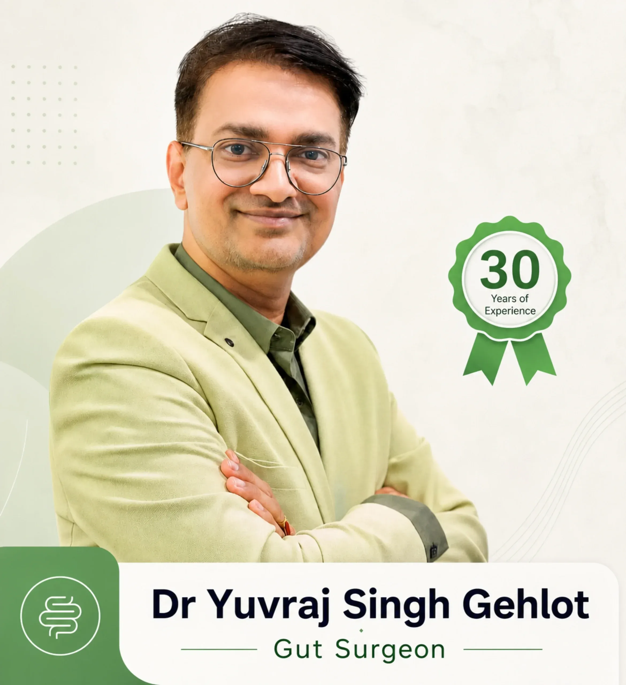

Expert laparoscopic hernia repair in Bangalore
A hernia rarely goes away by itself. Our surgical team assesses your hernia carefully and recommends the safest repair for you, most often through small keyhole incisions.
- Procedure
- Laparoscopic or open repair
- Anaesthesia
- Usually general*
- Hospital stay
- Often 1 day*
- Back to routine
- About 1–2 weeks*
*Typical for an uncomplicated, planned repair. The type of anaesthesia, length of stay and recovery depend on the kind and size of hernia, the approach used and your overall health. Your surgeon will discuss what to expect in your case.
Understanding Hernia
A hernia happens when part of an organ or fatty tissue pushes through a weak spot in the muscle wall that normally holds it in place. It usually shows up as a soft bulge, most often in the groin or around the belly button, that may be more noticeable when you stand, cough or strain.
Hernias do not heal on their own, and medicines or exercises cannot close the weak spot. Many slowly get bigger over time, and some can become trapped (incarcerated) or lose their blood supply (strangulated), which is an emergency. For this reason, most hernias are best treated with a planned surgical repair.
At GutCare Clinics, hernia repair is led by Dr. Yuvraj Singh Gehlot, a senior GI, laparoscopic and colorectal surgeon. Wherever it is suitable, we use laparoscopic (keyhole) surgery, which usually means smaller scars, less pain and a quicker return to daily life than a traditional open operation.
Common symptoms
- A bulge or swelling in the groin, scrotum, belly button area or near an old surgical scar
- A lump that gets bigger when you stand, cough or lift, and shrinks or disappears when you lie down
- A dragging, heavy or aching feeling in the groin, especially by the end of the day
- Pain or discomfort when bending, lifting or exercising
- Heartburn, chest discomfort or difficulty swallowing (with a hiatal hernia)
- Some hernias cause no symptoms and are found during a routine check-up
Causes & risk factors
- A weak spot in the abdominal wall present from birth
- Repeated straining, such as heavy lifting, long-standing constipation or straining to pass urine
- A chronic cough, for example from smoking or lung conditions
- Being overweight, or pressure on the abdomen during pregnancy
- A previous abdominal operation, which can leave a weaker area along the scar
- Ageing, which naturally weakens muscles and tissues over time
When to see a doctor promptly
- A hernia bulge that becomes hard, tender or cannot be pushed back in
- Sudden, severe pain at the site of a hernia
- The bulge turns red, purple or dark
- Nausea, vomiting, a swollen belly or being unable to pass stool or gas
- Fever along with pain at the hernia site
Types
- 01
Inguinal hernia
The most common type, appearing as a bulge in the groin and sometimes extending into the scrotum. It is much more common in men.
- 02
Umbilical hernia
A bulge at or near the belly button. It is seen in babies, and in adults it is often linked to pregnancy or excess weight.
- 03
Incisional (ventral) hernia
Develops through the scar of a previous abdominal operation, where the tissue has not healed fully strong.
- 04
Femoral hernia
Appears just below the groin crease at the top of the thigh. It is more common in older women and has a higher risk of becoming trapped, so early repair is usually advised.
- 05
Hiatal hernia
Part of the stomach slides up through the diaphragm into the chest. It often causes acid reflux and is frequently managed with lifestyle changes and medicines, with surgery for selected patients.
- 06
Epigastric, Spigelian and sports hernia
Less common types. An epigastric hernia sits between the belly button and breastbone, a Spigelian hernia forms along the side of the abdominal muscle, and a sports hernia is a groin strain injury seen in active people that needs careful assessment.
How we treat hernia
Every plan starts with a careful diagnosis. We recommend the least invasive option that will work for you.
-
Watchful waiting
Selected casesFor a small hernia that causes no symptoms, especially in someone with high surgical risk, your surgeon may advise regular review instead of immediate surgery. You will be told which warning signs need urgent attention.
-
Laparoscopic (keyhole) hernia repair
Most commonThe hernia is repaired through a few small cuts using a camera and fine instruments. The weak area is usually reinforced with a mesh. Most patients have less pain, small scars and a faster recovery.
-
Open hernia repair
The hernia is repaired through a single cut over the bulge, and the weak area is closed and strengthened, often with a mesh. It may be preferred for certain hernias or when keyhole surgery is not suitable.
-
Emergency hernia surgery
UrgentIf a hernia becomes trapped or strangulated, it needs urgent surgery to release it and protect the bowel. Our 24x7 emergency facility can assess and treat such cases promptly.
Your treatment, step by step
- STEP 01
Assessment and planning
Your surgeon examines the hernia, may arrange an ultrasound or other scan, and runs routine pre-operative tests. You will discuss the approach, the anaesthesia and how to prepare, including fasting instructions.
- STEP 02
Anaesthesia
On the day, you meet the anaesthesia team. Laparoscopic repair is usually done under general anaesthesia, so you are asleep and comfortable throughout. Some open repairs can be done under spinal or local anaesthesia.
- STEP 03
The repair
The surgeon gently returns the bulging tissue to its place and closes and strengthens the weak spot, usually with a mesh. Most planned repairs take around one to two hours, depending on the type and size of the hernia.
- STEP 04
Recovery and discharge
You are monitored as you wake up, given pain relief and encouraged to walk soon after. Many patients go home the same day or the next day with clear instructions on wound care and activity.
Recovery timeline
-
First few days
Some soreness and swelling around the cuts is normal and is usually well controlled with prescribed pain relief. Short, gentle walks help recovery.
-
1–2 weeks
Most people return to light daily activities and desk work. Avoid lifting anything heavy and follow your wound-care advice.
-
4–6 weeks
Most patients can gradually return to heavier lifting, the gym and sports, as advised by your surgeon at follow-up.
-
Long term
Keeping a healthy weight, treating constipation or a persistent cough, and lifting correctly help lower the chance of a hernia coming back.
Your surgeon
Dr. Yuvraj Singh Gehlot
MBBS, MS (General Surgery), F.I.S.C.P. · 30 years in healthcare · 25,000+ procedures
Can a hernia be treated without surgery?
Hernias do not close by themselves, and medicines, exercises or belts cannot repair the weak spot. A belt or truss may ease discomfort for a while, but surgery is the only lasting treatment. Very small, painless hernias are sometimes watched, but your surgeon will advise you on this.
Is laparoscopic hernia surgery better than open surgery?
Both are well-established and safe. Laparoscopic repair usually means smaller scars, less pain and a quicker return to work, and it is useful when hernias are on both sides or have come back. Open repair may be better for some hernias or patients, and your surgeon will recommend what suits you.
Will a mesh be used?
In most adult hernia repairs, a mesh is placed to reinforce the weak area, as this lowers the chance of the hernia returning. Your surgeon will explain whether a mesh is right for your hernia and answer any questions you have about it.
Can a hernia come back after surgery?
A hernia can occasionally return, but this is uncommon after a well-performed repair. Following the activity advice during recovery, keeping a healthy weight and avoiding repeated straining help reduce the risk.
How soon can I go back to work?
Most people with desk jobs return within one to two weeks after laparoscopic repair. If your work involves heavy lifting or physical labour, you may need around four to six weeks. Your surgeon will guide you based on your recovery.
Is hernia surgery covered by insurance?
Hernia repair is commonly covered by health insurance policies, subject to your policy terms. Our team provides transparent pricing and helps you with the insurance paperwork before your procedure.
Piles · Fistula · Fissure · Hernia
Don’t let embarrassment delay your relief.
Talk to a specialist in complete confidence. Most conditions are easier to treat when caught early.
- ~30 min laser procedures
- Same-day discharge
- Insurance assistance
